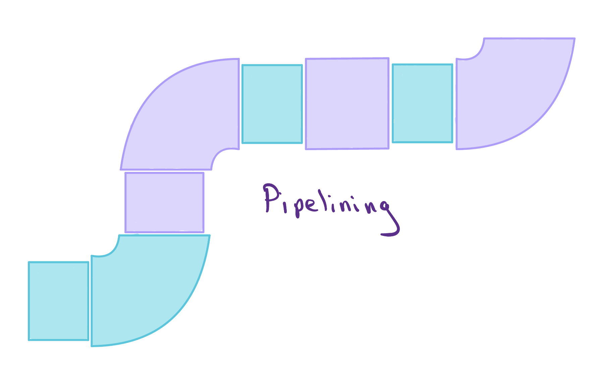
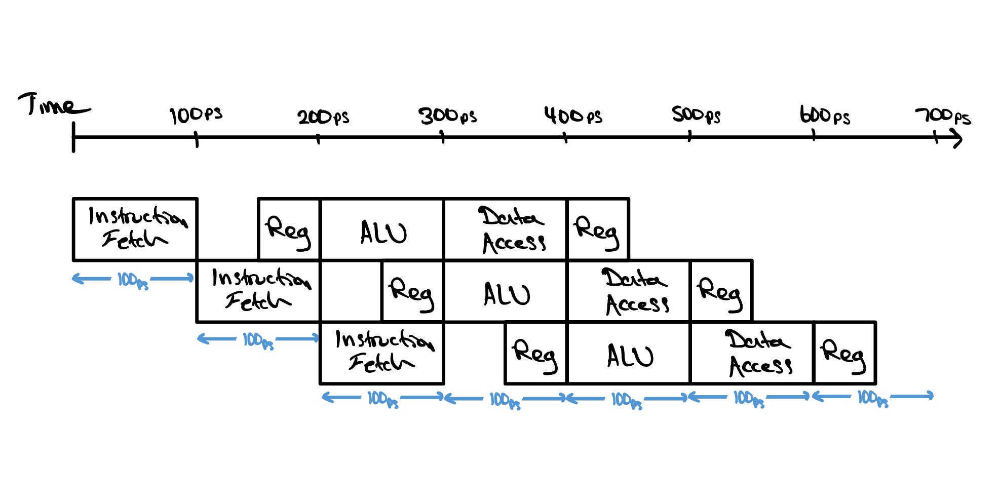
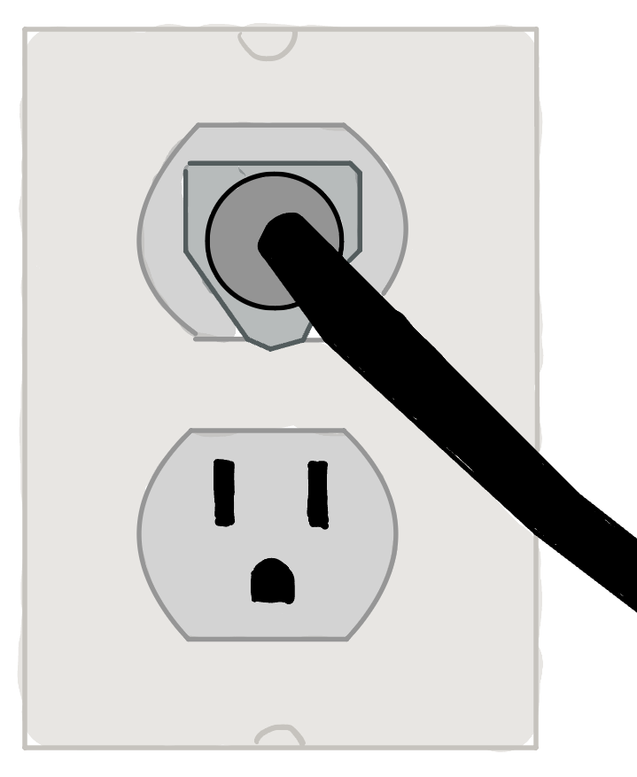
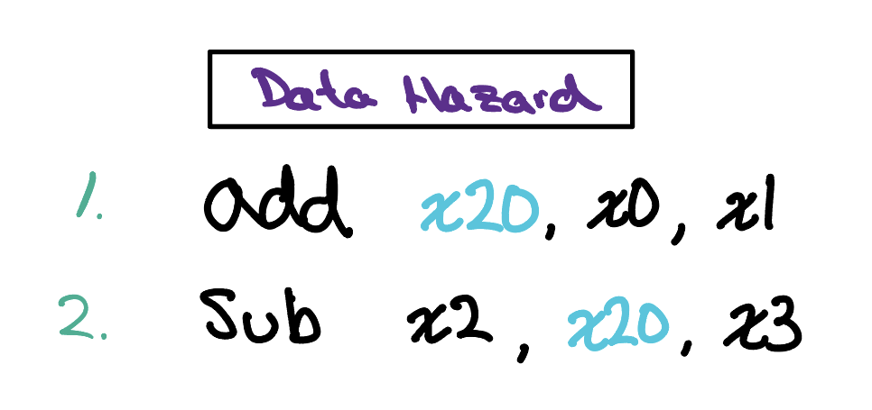
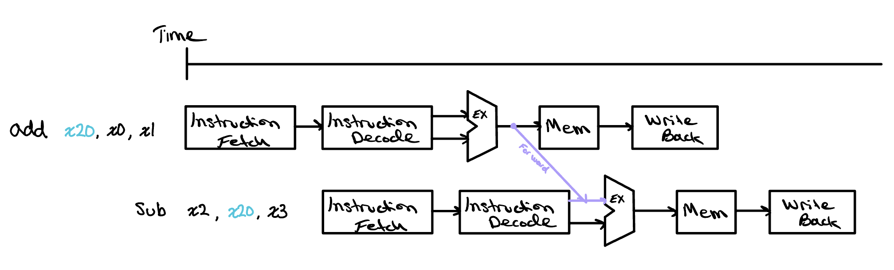
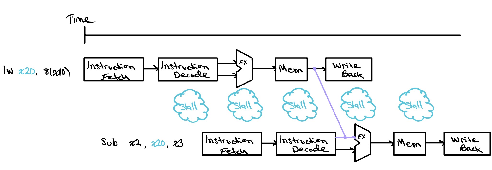

Pipelining
A single-cycle processor finishes one instruction before it begins the next, leaving most of the hardware idle at any given moment. Pipelining changes that by moving several instructions through the processor at once, each in a different stage of the work, much like an assembly line. The overlap multiplies throughput while introducing a new set of hazards along the way.

What is Pipelining?
Pipelining is much more simple than you think. If you’ve ever done laundry, you’ve almost certainly done pipelining. Picture working your way through several loads:
- Put your first load of dirty clothes into the washer and start it.
- When the washer finishes, move that wet load into the dryer. Right away, put your next dirty load into the washer, so both machines are now running at the same time.
- When the dryer finishes, take those clothes out and begin folding them. Move the freshly washed load from the washer into the dryer, and start another dirty load in the washer.
- Keep repeating this pattern. Before long, a load is being folded, a load is drying, and a load is washing, all at the same moment.

A single-cycle processor is like doing laundry one load at a time, washing, drying, and folding a load completely before touching the next. Pipelining, like a well-run laundry day, keeps every stage busy so far more work finishes in the same amount of time.
Notice how at the very beginning and the very end of the workflow, only one task is happening at a single moment in time. This is the pipeline filling and draining, and it is why the speedup is never quite as large as you might hope when there are only a few loads to run. With a very large number of loads, the throughput improvement grows close to the number of stages the work is split into, which here is three. With just a handful, though, those partly empty hours at the start and finish hold it back. Our single-cycle laundry takes twelve hours to work through four loads at three hours each, so a threefold speedup would suggest four hours. In practice the pipelined version finishes those same four loads in six hours, a twofold improvement, and only as the loads pile up does the gain creep toward the full threefold.
This same regularity is why the RISC-V instruction set was designed with pipelining in mind. Every instruction is exactly the same length, so the processor always knows where one instruction ends and the next begins, and can fetch them in a steady rhythm. The fields inside an instruction, like the registers it reads and writes, almost always sit in the same bit positions, so the Decode stage can start pulling them out right away instead of first working out the instruction's shape. And unlike x86, RISC-V never operates directly on values still sitting in memory. Arithmetic happens only on registers, and memory is reached only through dedicated load and store instructions. That keeps every instruction to one predictable job and lets memory access live in its own stage, exactly the kind of regularity a pipeline needs to keep every stage busy.
A Simple 5-Stage Pipeline
In our pipelined processor, we break the work each instruction has to do into five smaller stages, and we let a different instruction sit in each one at the same time. From start to finish, every instruction moves through the same five steps:
- Fetch: we grab the next instruction from instruction memory, using the program counter to know which one to read.
- Decode: we work out what the instruction is asking for and read its source values out of the register file.
- Execute: the ALU does the actual work, whether that is an addition, a subtraction, or a comparison.
- Memory: if the instruction needs it, we access an operand in data memory, reading a value for a load or writing one for a store.
- Writeback: we write the result back into the register file so that later instructions can use it.

Splitting the work this way also changes what sets our clock speed. In the single-cycle CPU, every instruction had to finish all of its work inside a single clock cycle, so the clock had to be slow enough for the slowest instruction to make it from start to end. In the pipelined design, each clock cycle only has to be long enough for the slowest single stage to do its part, since that is as far as any one instruction advances in a cycle. Our clock is now bottlenecked by the slowest stage rather than the slowest instruction.
This does not make an individual instruction any quicker. A single instruction still has to travel through all five stages, so the time from when it enters the pipeline to when it comes out the other end is just the same as before. What changes is that we now keep five instructions in flight at once, each sitting in a different stage. Once the pipeline is full, a finished instruction comes out every clock cycle instead of every five, which dramatically raises our throughput, the number of instructions the processor completes in a given amount of time.
Pipelining Hazards
Pipelining gives us a big jump in throughput, but it does not come entirely for free. Because several instructions are now flowing through the processor at once, moments come up where the next instruction cannot safely begin on the very next clock cycle. We call these moments hazards, and if we ignore them, the pipeline will happily compute the wrong answer.

Structural Hazards
A structural hazard is a hardware limitation. It happens when the hardware simply cannot support the combination of instructions we want to run in the same clock cycle, because two of them need the same piece of hardware at the same moment. Think back to the laundry: imagine your washer and dryer both have to be plugged into a single power outlet, so only one of them can run at any given moment. Even with two separate machines, a fresh load cannot start washing while an earlier load is still drying, and the line stalls until the outlet frees up.
Data Hazards
Data hazards are a little more interesting. They happen when one step depends on a result that an earlier step has not finished producing yet, so it cannot safely move on. In our pipeline, an instruction reads the values it needs during Decode, while the instruction just ahead of it is often still in flight and will not write its own result back to the register file until Writeback, several stages later. If the second instruction depends on that result, it cannot simply carry on; it has to wait until the value it needs actually exists.
Back in the laundry, imagine the setting for your next wash depends on how dirty the previous load turns out to be, something you only learn once that load has come out of the washer. Even with a machine sitting empty, you cannot start the next load until the earlier one has run far enough to give you that answer. This time the next load is not waiting for a machine; it is waiting for a result from the load ahead of it.

An example of how we might encounter a data hazard in our RISC-V pipelined processor is shown here. The first instruction, add, takes the values sitting in x0 and x1 and writes their sum into x20. The very next instruction, sub, then needs that same x20 as one of the values it works with. This is exactly where the trouble appears. The add instruction does not write its result back into x20 until its Writeback stage, yet sub tries to read x20 several stages earlier, during its own Decode. The value that sub is counting on simply does not exist in the register file yet, so if we do nothing, the processor will read a stale x20 and quietly compute the wrong answer.
Fortunately, we can get around this without ever stalling the pipeline. The key realization is that we do not actually need to wait for the entire add instruction to finish before we can make use of its result. By the time add reaches the end of its Execute stage, the ALU has already computed the sum that belongs in x20, even though that value has not yet been written back. Rather than let it sit idle, we can route that freshly computed result straight from the output of the Execute stage of add into the input of the Execute stage of sub, arriving precisely when sub needs it. This technique is called forwarding, or bypassing, and it lets the dependent instruction carry on without losing a single cycle. In the diagram below, you can follow the purple Forward arrow as it carries the ALU result of add directly down into the Execute stage of sub, skipping the long wait for the register file.

This trick works only because an arithmetic instruction like add produces its result in the Execute stage, one step ahead of where the instruction behind it needs that value. Things change if the value comes from memory. Suppose the first instruction were instead lw x20, 8(x10), a load that reads x20 from data memory. A load does not have its result ready at the end of Execute; it only pulls the value out one step later, in the Memory stage. But sub needs x20 at its own Execute stage, which lines up with the lw instruction's Memory stage, so the value is simply not ready in time.
This is why it is not really forwarding anymore. Forwarding can only pass a result sideways or forward in time, from a stage that has already finished into one that has not started yet. Here the producing stage, Memory, comes after the stage that needs the value, so sending x20 across would mean pushing it backward in time into an Execute stage that has already happened, which is impossible.

The best we can do is stall the sub instruction for a single cycle, letting lw reach the end of its Memory stage first. Once the loaded value exists, we forward it from there into the now delayed Execute stage of sub. This particular case, where a load feeds an instruction right behind it, is common enough to earn its own name, the load-use hazard, and it is the one data hazard that forwarding alone cannot fully hide.
Control Hazards
Check Yourself
For each sequence below, state whether it must stall, can avoid stalls using only forwarding, or can execute without stalling or forwarding.